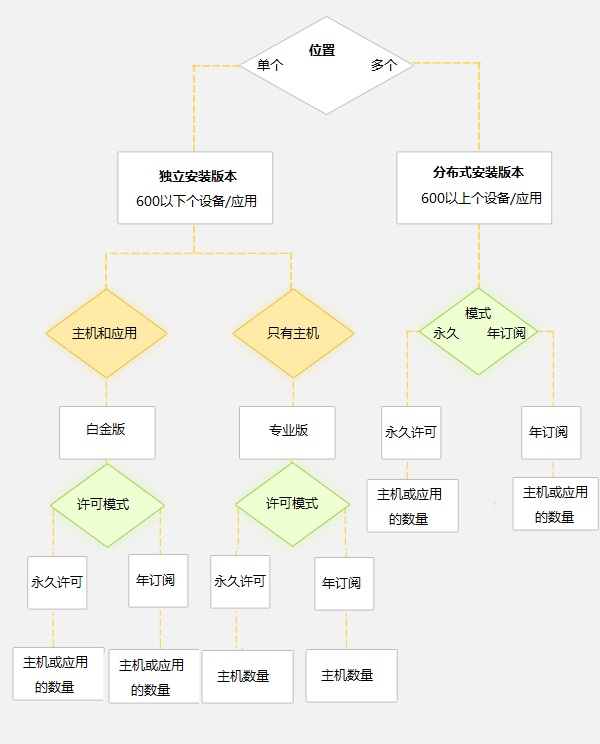

许可信息
和我们的竞争对手不同，他们按照处理的日志数量进行收费；而我们的许可方式更加简单。软件许可是基于产品版本、许可模式和设备数量。产品版本有：独立安装 – 白金版、独立安装 – 专业版和分布式版本。许可模式有：永久许可（标准的）和年订阅模式(ASM)。
独立版本：
如果你的企业是中小型的，网络位于同一个地理位置，管理的日志设备或应用不超过600个，独立安装版本就适合你。
独立版本包括：
- 白金版 - 这个版本提供了基于日志管理的全部“安全信息管理（SIM）”的功能，以及增值功能。我们建议使用这个版本来满足你信息安全和和IT网络的进一步需求。
- 专业版 - 这个版本提供了满足你IT网络中基于日志管理的最小的信息安全管理功能。
分布式版本：
如果你是一个大型的企业，在多个地方管理日志，管理的日志设备或应用超过12000个，那么请使用分布式版本。分布式版本包括独立安装-白金版的全部功能，并且可以实现分布式部署。
Evenglog Analzyer的两种许可模式
- 永久模式
在这个模式中，许可是永久的。按照年度维护的方式对支持、升级收费。
- 年订阅模式
在这个模式中，软件许可是一年的。过期之后要每年更新。年度维护费用已经包含在其中，不再另外收费。
ManageEngine软件许可的优点：
- 基于主机/应用数，非常简单。有利于节约成本。按需购买软件许可。
- 64版本和32版本的价相同。
- 分布式版本的许可部署在管理服务器上，不限制被管服务器部署的数量。
如何选择软件许可：
- 评估你的网络来选择独立安装或分布式部署。
- 对于分布式部署，选择永久模式使许可永不过期；选择年订阅模式以控制起始成本；评估要管理的日志设备/应用的数量。
- 对于独立安装，选择白金版来获取增值功能；选择专业版如果你不要增值功能；选择永久模式使许可永不过期；选择年订阅模式以控制起始成本；评估要管理的日志设备/应用的数量。
选择EventLog Analyzer版本的决策表

如何把评估许可升级为购买的许可
- 首先确保你已经从我们获得了许可文件。
- 浏览找到这个许可文件。
- 点击更新来应用新的许可文件。
 |
说明：新许可将立即生效。你不需要重启Evenglog Analyzer服务器。 |
显示许可信息
登录到EventLog Analyzer，点击客户端右上角的更新许可链接。许可页面将显示当前使用的软件许可信息。
许可信息包括：
- 应用的许可类型 - 免费版或专业版或白金版
- 还有多少天许可将会过期
- 可以管理的最大主机数量
|